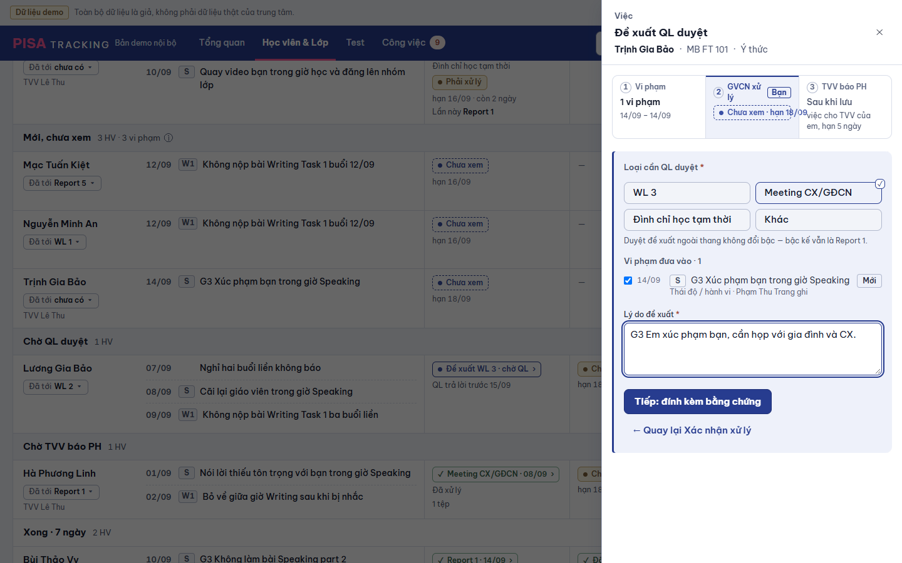
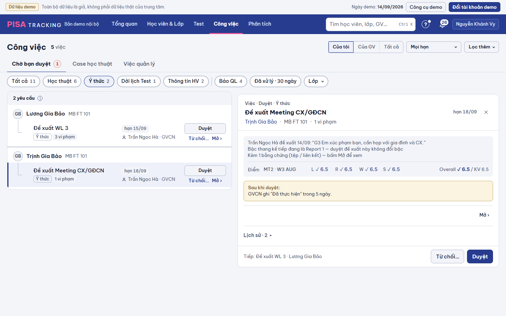

Nguồn: bản rà toàn bộ 11/11 mục 3 #6 (G3-4, G3-5, G3-7, G3-8) — chủ SP 11/11 "Theo hết 10 đề xuất". Ngày demo 14/09/2026 · W3 SEP, em Trịnh Gia Bảo (MB FT 101, GVCN Trần Ngọc Hà, TVV Lê Thu, QL Nguyễn Khánh Vy, CX Vũ Thanh Tâm). Hình ảnh giữ panel Ý thức V2 đã duyệt (K8: dải ①②③, chip môn, chân lưu). Luật nghiệp vụ không đổi: bằng chứng bắt buộc khi gửi (V4-10, LUAT-5), QL trả lời trong 5 ngày, việc TVV sinh ngay (N1).
1GVCN: chọn loại + lý do → "Tiếp: đính kèm bằng chứng" (màn 2, tạo nháp trên máy chủ) → + Liên kết → Lưu → Gửi = 10 bấm. Đóng ở màn 2 = xoá nháp, lý do đã gõ mất; đóng tab = nháp mồ côi. · 2QL: thẻ chỉ có lý do + "Kèm 1 bằng chứng — bấm Mở để xem" → phải sang hồ sơ HV rồi quay lại. · 3Duyệt xong: chuông GVCN ở "Để biết" (việc Đã thực hiện có hạn 5 ngày); CX không được báo có họp.


1mở từ "Đề xuất QL duyệt" (nút chữ ở Xác nhận xử lý / ⋯ dòng em) — cùng panel, cùng dải ①②③; ô ② ghi "Đề xuất · QL trả lời trong 5 ngày", ô ③ "việc cho TVV Lê Thu, hạn 5 ngày" (N1 giữ) · 2Bằng chứng chọn ngay trong form (+ Tệp · + Liên kết · dán ảnh · kéo thả — cùng khối của Ghi vi phạm), chưa tải lên tới khi bấm Gửi · 3một nút "Gửi QL duyệt": máy chủ nhận đề xuất → tải tệp → gửi; bỏ "Tiếp: đính kèm bằng chứng" và màn 2 · 4chữ đang gõ (lý do) giữ ở nháp của panel (như mọi panel) — đóng giữa chừng, mở lại vẫn còn; không còn nháp trên máy chủ.
Vi phạm đưa vào 1
1bấm Gửi khi chưa có bằng chứng (loại cần tệp — LUAT-5) → khung bằng chứng viền đỏ, chân "Còn thiếu: Bằng chứng"; không gọi máy chủ · 2tệp tải lỗi giữa chừng → đề xuất chưa gửi (QL chưa thấy gì), dòng tệp lỗi có "Thử lại", chữ giữ nguyên; đóng panel lúc này = bỏ đề xuất dở trên máy chủ, lý do vẫn ở nháp của panel · 3loại "Không tăng bậc" (bậc ≤ bậc hiện tại) chỉ cần lý do — khung bằng chứng không có dấu *.
1khung panel duyệt GIỮ (đầu: loại · tên · em · lớp · chip hạn; chân dính "Tiếp: …" · Từ chối… · Duyệt; Lịch sử · n gập cuối) · 2thêm đầu mục Vi phạm · n (ngày · chip môn · tên · ai ghi · mô tả một dòng) và Bằng chứng · n (ảnh xem ngay, tệp / liên kết mở tab mới) — bỏ câu "bấm Mở để xem" · 3chỉ đọc khi panel MỞ (1 request cho vi phạm + bằng chứng), danh sách Chờ duyệt không đọc thêm · 4"Sau khi duyệt" nói đủ ai nhận việc / tin: GVCN ghi Đã thực hiện trong 5 ngày · Meeting: CX chi nhánh được báo.
Trần Ngọc Hà đề xuất 14/09: “G3 Em xúc phạm bạn, cần họp với gia đình và CX.”
Bậc thang kế tiếp đang là Report 1 — duyệt đề xuất này không đổi bậc
Vi phạm 1
Bằng chứng 2
Hồ sơ Ý thức ›
Lịch sử · 2 ▸
1GVCN: tin "Đã duyệt" vào nhóm Cần làm kèm hạn, link mở thẳng việc "Đánh dấu đã thực hiện" ở Công việc (không còn "Để biết · Yêu cầu của tôi") · 2CX chi nhánh (người dự họp): tin Để biết khi duyệt Meeting CX/GĐCN — em · lớp · GVCN; link hồ sơ Ý thức của em. Loại khác (WL 3, Đình chỉ…) không báo CX · 3Từ chối giữ như cũ (Cần làm GVCN: "QL từ chối · lý do").
Vi phạm đưa vào 1
Trần Ngọc Hà đề xuất 14/09: “G3 Em xúc phạm bạn, cần họp với gia đình và CX.”
Vi phạm 1
Bằng chứng 2
| Thao tác | Trước | Sau |
|---|---|---|
| GVCN gửi đề xuất có bằng chứng | Loại · Lý do · Tiếp (màn 2) · + Liên kết · dán · Lưu · Gửi = 10 bấm, 2 màn | Loại · Lý do · + Liên kết · dán · Thêm · Gửi QL duyệt = 7 bấm, 1 màn |
| Đóng panel giữa chừng | màn 2: xoá nháp, mất lý do · đóng tab: nháp mồ côi trên máy chủ | lý do giữ ở nháp panel (mở lại còn) · máy chủ chỉ có đề xuất khi đã gửi; đề xuất dở (tệp lỗi) bị bỏ khi đóng; nháp cũ của cùng người · cùng em tự dọn khi gửi lần sau |
| Thiếu bằng chứng | chỉ biết ở màn 2 | báo ngay khi bấm Gửi, không gọi máy chủ |
| Rút / sửa lý do / thêm, bỏ bằng chứng khi chờ | Xem lần xử lý · Yêu cầu của tôi | GIỮ như cũ |
| QL xem vi phạm + bằng chứng | Mở › hồ sơ HV › tab Ý thức › quay lại (1 chuyển trang mỗi thẻ) | ngay trong panel duyệt (0 chuyển trang); "Hồ sơ Ý thức ›" giữ |
| QL Duyệt / Từ chối… / Hoàn tác / Tiếp | panel duyệt | GIỮ |
| GVCN biết đã duyệt | chuông "Để biết" → Yêu cầu của tôi | chuông "Cần làm" + hạn → thẳng việc Đánh dấu đã thực hiện |
| CX biết có Meeting | không có (GVCN báo ngoài) | chuông "Để biết" khi QL duyệt Meeting CX/GĐCN |
Đọc Turso: GVCN gửi = 3 request như cũ (đề xuất · tệp · gửi), bớt 1 GET nháp. QL: danh sách Chờ duyệt không đổi; mở panel một thẻ Ý thức +1 request (vi phạm + tệp của MỘT lần xử lý, ≤ 3 câu, < 20 dòng). Tin CX: +1 dòng ghi mỗi lần duyệt Meeting.